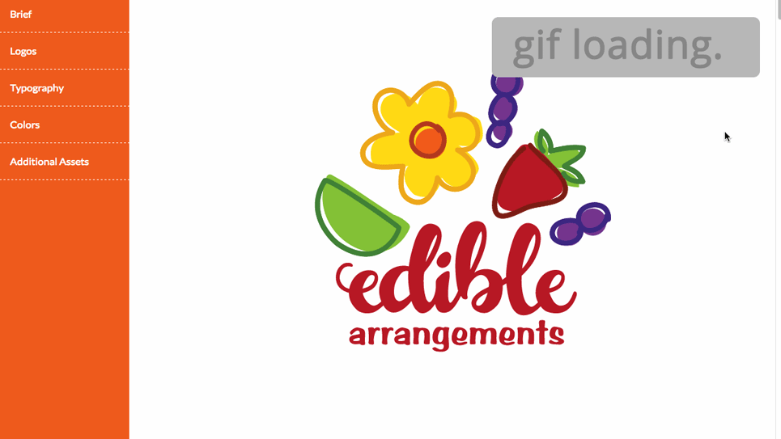

Why Rebrand?
The Edible brand is growing quickly, yet suffering an outdated identity.The branding is strangely inconsistent between its franchises and internet presence. Originally, the actual product was shown in the logo, though the brand is now well-known enough to make this no longer necessary. It can now focus on streamlining its design, decreasing colors, and making it much more efficient overall for both print and web usage.
Goals
- Elevate brand awareness
- Decrease inconsistencies among franchises
- Create a cohesive web & print brand identity
- Develop an easily accessible and thorough guideline
The look and feel I wanted to evoke was: Fun, sweet, and simple.
From Sketch to Vector
“The details are not the details. They make the design.” —Charles Eames
The Final Logo

Enforcing Unity
I created an online style guide for the brand, to ensure ease of access and provide a clear guideline for:
- Acceptable Logo Use
- Color Guide
- Typography
- Print & Web Layouts
- Additional Assets & Icons
Extending the Brand
I added physical and digital items to the brand identity, which added new patterns, characters, and icons. Many of the new assets came from the addition of a mobile app called "Fruit Story," that promotes fruit consumption by focusing on getting children excited. The app is narrated by two characters — Mark the Worm and Jeff the Bug —. For more information, see the case study below.
See Fruit Story Case Study